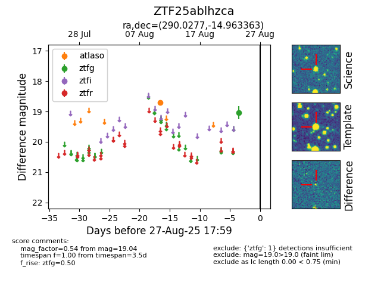

FINK: ZTF25ablhzca
Lasair: ZTF25ablhzca
ALeRCE: ZTF25ablhzca
ZTF25ablhzca (ztf,fink)
equatorial (ra, dec) = (290.0277,-14.96336)
galactic (l, b) = (22.5955,-13.00434)

last atlaso=18.71, ztfg=19.04
1 atlaso, 1 ztfg detections